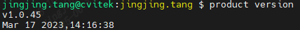
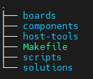
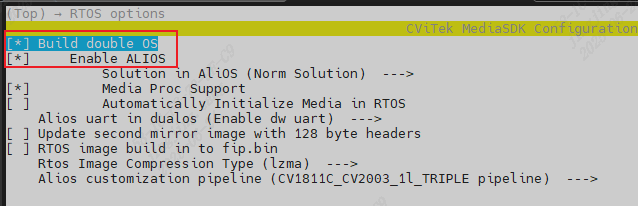
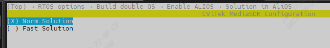

2. Compilation Environment¶
2.1. Install Python and pip¶
Install Python3
Download PIP script
Install pip by running the following command
python get-pip.py
Install the Python serial and USB driver modules by running the following command
pip3 install pyserial pyusb
Install the YAML module by running the following command
pip3 install pyyaml
Note
If installing pyyaml above fails, use the following command
pip3 install pyyaml -i http://pypi.douban.com/simple –trusted-host pypi.douban.com
Note
PS: Ubuntu version 20.0.4 or later is recommended
2.2. Install the YOCTOOL tool¶
Install yoctool with the command in a Linux environment
sudo pip install yoctools -U
Run yoc -V to check the version and make sure it is 2.0.25 or later

Enter product version to check the product version and make sure that product was installed successfully

2.3. SDK File Description¶

Description of the top-level directories:
boards: Stores board-related configuration
components: Stores various components, such as the AOS kernel, CLI, network components, and CSI drivers
host-tools: Is the cross-compilation toolchain. AliOS uses the Xuantie cross-compilation toolchainXuantie-900-gcc-elf-newlib-x86_64-V2.6.1
solutions: Is the solution directory. It mainly stores business logic and runtime binaries, and supports fast-boot and normal-boot solutions.
Description of the directories under solutions:
application Mainly contains application-related components
customization Contains customer applications and configurations for different product forms. The main files are described below:
custom_sysparam.c |
vbconfiguration |
custom_viparam.c |
VI configuration and sensor-related files are stored here |
custom_voparam.c |
voconfiguration |
custom_vpssparam.c |
Mainly VPSS configuration |
custom_vencparam.c |
Mainly VENC configuration |
custom_moduleparam.c |
Mainly common configuration for each module |
custom_platform.c |
Platform-related configuration, such as pinmux settings and GPIO pull-up operations |
custom_event.c |
System and module event-related configuration |
py_tool: Python tools
script: Compilation scripts
package.yaml File Description
https://help.aliyun.com/document_detail/308617.html
package.yaml is mainly used to define and enable feature macros, such as selecting different sensors and selecting required component dependencies
2.4. Fast Boot Mode and Normal Boot Mode¶
2.5. How to Compile AliOS¶
Set the environment variables (using cv1842hp_wevb_0014a_spinor as an example)
$ source build/envsetup_soc.sh
-------------------------------------------------------------------------------------------------------
Usage:
(1) menuconfig - Use menu to configure your board.
ex: $ menuconfig
(2) defconfig $CHIP_ARCH - List EVB boards($BOARD) by CHIP_ARCH.
** cv184x ** -> ['cv184x', 'cv1841c', 'cv1842cp', 'cv1842hp', 'cv1843hp']
ex: $ defconfig cv184x
(3) defconfig $BOARD - Choose EVB board settings.
ex: $ defconfig cv1842hp_wevb_0014a_spinor
ex: $ defconfig cv1842cp_wevb_0015a_spinand
-------------------------------------------------------------------------------------------------------
Select the EVB cv1842hp_wevb_0014a_spinor
$ defconfig cv1842hp_wevb_0014a_spinor
====== Environment Variables =======
PROJECT: cv1842hp_wevb_0014a_spinor, DDR_CFG=ddr3_2133_x16
CHIP_ARCH: CV184X, DEBUG=0
SDK VERSION: musl_arm, RPC=0
ATF options: ATF_KEY_SEL=default, BL32=1
Linux source folder:linux_5.10, Uboot source folder: u-boot-2021.10
ENABLE_DUAL_OS: y
CROSS_COMPILE_PREFIX: arm-none-linux-musleabihf-
ENABLE_BOOTLOGO: 0
Flash layout xml: build/boards/cv184x/cv1842hp_wevb_0014a_spinor/partition/partition_spinor.xml
Sensor tuning bin: cvsens_cv2003
Output path: install/soc_cv1842hp_wevb_0014a_spinor
Dual-system configuration
Use the menuconfig command to select the required configuration and compile the AliOS image.
{kind=link}

The default is normal boot mode. Select the corresponding configuration to switch between fast boot mode and normal mode.
{kind=link}

Compile AliOS
The AliOS image is usually packaged into the boot image with a single command.
$ build_uboot
Run build_uboot() function
Run _link_uboot_logo() function
......
[TARGET] alios-depends
......
[TARGET] alios-build
......
INFO: raw2cimg small part size
INFO: size:b5c42, offset:200000, part_sz:100000, crc:38896f66
INFO: Packing yoc.bin done!
After compilation, the generated AliOS image file yoc.bin is copied to the install directory.
2.6. Image Description¶
The generated files under /solutions/normboot are:
yoc.elf: The complete executable and related files, which can be parsed by objdump or readelf
yoc.bin: The runtime binary and small-core image file to be burned to Flash
yoc.asm: Disassembly file
yoc.map: Memory map file
yoc_sdk/lib/*.a: Static library
generated: The firmware image file structure of the AliOS system is described below:
boot0: Binary file of the first-stage Bootloader (FSBL)
boot: Binary file of the second-stage Bootloader (such as U-Boot)
config.yaml: Core file for the partition table and firmware configuration
imtb: Binary file of the Image Table
imtb.hex: HEX format of the Image Table
prim: Main system image (an alias for yoc.bin)
prim.hex: HEX format of the main system image